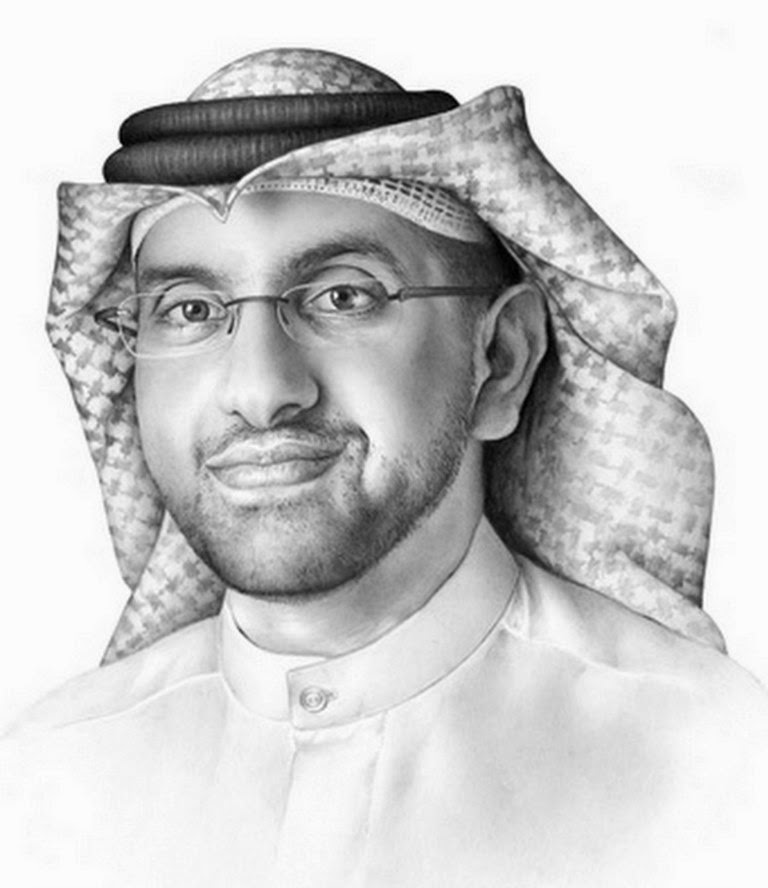
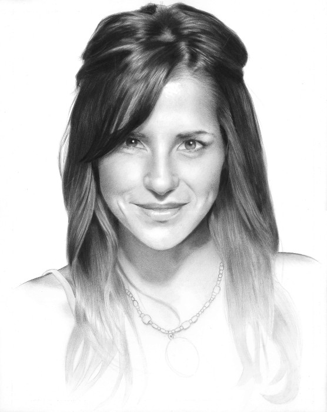

10.00h. – 11.30h. Nuevas prácticas en oftalmología
D. Miguel A. Benítez Suarez, presidente de la Asociación Andaluza de oftalmología.
D. Miguel A. Benítez Suarez, presidente de la Asociación Andaluza de oftalmología.
D. Toufique Ahmed Soomro, Miembro de honor de la asociación AAEEIO.
Crear una técnica nunca antes vista para el tratamiento de la catarata le valió al indio Toufique Ahmed Soomro, de 46 años, ser distinguido como el mejor oftalmólogo a nivel mundial. En febrero pasado, alcanzó la medalla de oro durante el Cataract Surgery Olympics, en el Congreso Mundial de Oftalmología realizado en México.
Un reportaje de "Punto Final" permitió conocer un poco más de la vida del destacado cirujano. Es egresado de la Universidad Federico Villarreal y especializado con honores en Brasil y Estado Unidos. Además, es director de la clínica Oftalmo Salud, dicta clases y ayuda a las personas que no pueden pagar un tratamiento.
Uno de sus pacientes es el reconocido ex futbolista peruano Julio Meléndez, quien a inicios de este año padeció de una catarata. "Comencé a leer y no podía, comencé a ver nublado, incluso me compré dos lupas", contó. El histórico jugador se puso en manos Izquiero Villavicencio y tras una exitosa intervención volvió a ver sin problemas.
| Artículos | Publicación |
|---|---|
| Role of Image Contrast Enhancement Technique for Ophthalmologist as Diagnostic Tool for Diabetic Retinopathy. | DICTA 2016: 1-8 |
| An Ophthalmologist's Tool for Predicting Deterioration in Patients with Accommodative Esotropia. | ITNG 2013: 738-742 |
D. Jose M. Sánchez San Emeterio, oftalmólogo titular en el Hospital Virgen del Rocio.
Dña. Sarah Zelikovitz, Profesora del Graduate Center of CUNY.
Es autora de más de 200 trabajos de investigación y descubridora de uno de los modelos experimentales de uveitis que mas luz ha arrojado en la comprensión de los mecanismos de producción de esta enfermedad. El pasado año 2010 recibió el reconocimiento de la Academia Americana de Investigación oftalmológica(ARVO) a la mejor trayectoria en investigación oftalmológica.
En un porcentaje considerable de casos, a pesar de estudios exhaustivos, no se llega a identificar el motivo de esta inflamación ocular y en ocasiones es la primera manifestación de una enfermedad general que se manifiesta incluso años después de iniciados los problemas oculares. Cada año casi un tercio de los pacientes que padecen uveítis sufrirá un episodio que agravamiento que dañará su visión, en algunos casos de manera irreversible. Por todo esto, unido a un comportamiento crónico en muchos de los casos, la uveítis siempre supuso un importante reto para los Oftalmólogos dada la complejidad de estos pacientes y su edad relativamente joven (la edad media a la que se inicia son los 40 años).
El primer motivo por el que una persona joven, en edad laboral, puede quedarse ciega en un país sanitariamente desarrollado como es el nuestro es la UVEÍTIS. Esta enfermedad consiste en la inflamación de una de las capas del globo ocular y puede tener diversas causas: infecciosa, autoinmune, secundariaa traumatismos o relacionada con tumores.
| Artículos | Publicación |
|---|---|
| Using Decision Trees to Find Patterns in an Ophthalmology Dataset. | FLAIRS Conference 2011 |
| Classification of Tandem Repeats in the Human Genome. | IJKDB 3(3): 1-21 (2012) |
Dña. Teresa Martínez Génova, oftalmóloga del Hospital Puerta del Mar.
Prof. Dr. Ron Kikinis, Director fundador del Laboratorio de Planificación Quirúrgica, Boston, MA
El Dr. Kikinis es el Director fundador del Laboratorio de Planificación Quirúrgica, Departamento de Radiología, Hospital Brigham y de Mujeres, Facultad de Medicina de Harvard, Boston, MA, y Profesor de Radiología en la Escuela de Medicina de Harvard. Este laboratorio fue fundado en 1990. En 2004 fue nombrado profesor de radiología en la Facultad de Medicina de Harvard. En 2009, fue el destinatario inaugural de la Sociedad MICCAI "Enduring Impact Award". El 24 de febrero de 2010 fue nombrado Director Distinguido de Robert Greenes de Informática Biomédica en el Departamento de Radiología del Hospital Brigham and Women's. El 1 de enero de 2014, fue nombrado "Institutsleiter" de Fraunhofer MEVIS y Profesor de Informática Médica de la Universidad de Bremen.
A mediados de los años 80, el Dr. Kikinis desarrolló un interés científico en los algoritmos de procesamiento de imágenes y su uso para extraer información relevante de datos de imágenes médicas. Desde entonces, este tema ha madurado desde un tema bastante exótico a un campo de la ciencia. Esto se debe al aumento explosivo tanto de la cantidad como de la complejidad de los datos de imágenes. El Dr. Kikinis ha dirigido y ha participado en investigaciones en diferentes áreas de la ciencia. Sus actividades incluyen investigación tecnológica (segmentación, registro, visualización, computación de alto rendimiento), desarrollo de sistemas de software e investigación biomédica en una variedad de especialidades biomédicas. La mayoría de su investigación es de naturaleza interdisciplinaria y está dirigida por equipos multidisciplinarios. Los resultados de su investigación han sido reportados en una variedad de artículos de revistas revisadas por colegas. Es autor y coautor de 316 artículos revisados por pares
| Artículos | Publicación |
|---|---|
| Auditory feedback to support image-guided medical needle placement. | IJCARS 12(9): 1655-1663 (2017) |
| Surgical Data Science: Enabling Next-Generation Surgery | CoRR abs/1701.06482 (2017) |